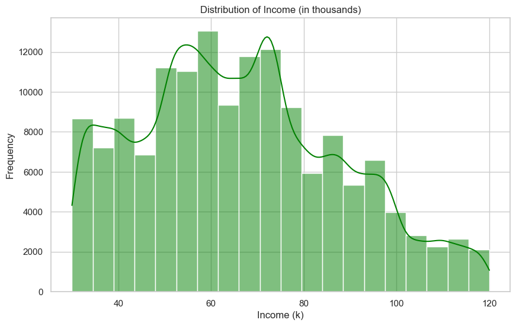

Starbucks Analysis
Starbucks has been using various marketing offers, such as Buy One Get One (BOGO), Discount, and Informational campaigns, to engage their customers. The dataset used for this analysis contains user interaction events with these offers, including when an offer was received, viewed, or completed. The goal of this analysis is to understand which demographics and channels are most effective in driving offer completions and to provide insights for optimizing future marketing strategies.
This data set contains simulated data that mimics customer behavior on the Starbucks rewards mobile app. Every few days, Starbucks sends out offers to users of the app, which can range from simple advertisements for drinks to more substantial offers like discounts or Buy One Get One Free (BOGO) promotions. Some users might receive offers regularly, while others may not receive any during certain weeks. Not all users receive the same offer, which presents a unique challenge for Starbucks.
The task is to determine which demographic groups respond best to each type of offer and how Starbucks can optimize the delivery of these offers to maximize user engagement. The data set represents a simplified version of the real Starbucks app, focusing on a single product, while the actual app has a wide variety of offerings.
Each offer has a validity period, which defines how long the customer can take advantage of it. For example, a BOGO offer may be valid for five days. Even informational offers have a validity period, allowing customers to be influenced by the information for a set number of days after receiving the offer.
The data includes transactional records, indicating the amount spent by users and the timing of each transaction, along with interactions with offers—such as when an offer was received, viewed, or completed. It’s important to note that users may make purchases without ever receiving or viewing an offer. Similarly, a user may receive an offer but not open it, yet still make a qualifying purchase during the offer period.
The primary challenge is to combine transactional, demographic, and offer data to determine which groups of people are most responsive to each type of offer and how to best present each offer. By understanding this, Starbucks can more effectively target different demographic groups through specific channels, ultimately optimizing marketing efforts and enhancing customer satisfaction.
Datasets
The analysis is based on three main datasets: Profile, Portfolio, and Transcript. Each dataset plays a crucial role in understanding user behavior, their response to offers, and the effectiveness of different types of marketing strategies. Below is a detailed description of each dataset:
Profile Dataset
The Profile dataset contains demographic information about users participating in the rewards program. It includes data for 17,000 users across five fields:
-
Gender: This variable is categorical and can take
values such as 'M', 'F', 'O', or
nullif the information is missing. Understanding user gender helps in identifying gender-specific preferences and tailoring targeted offers accordingly. -
Age: A numerical value representing the user's age.
Missing values are encoded as
118. Age is a significant factor for understanding generational behavior patterns in offer response. - ID: A unique identifier for each user, represented as a hashed string. This ID helps in linking users across the datasets.
-
Became Member On: The date when the user joined the
rewards program, given in
YYYYMMDDformat. This variable is helpful to understand how user engagement changes over time, depending on membership duration. - Income: The annual income of the user, represented as a numeric value. Income is an important factor in determining which types of offers resonate better with different socioeconomic segments.
Portfolio Dataset
The Portfolio dataset includes details of all the offers sent out during the 30-day test period. It contains data for 10 different offers across six fields:
- Reward: The monetary amount awarded if the user completes the offer's conditions.
-
Channels: A list indicating the different
communication channels used to deliver the offer. These can include
web,email,mobile, andsocial. Understanding which channels are most effective is essential for optimizing marketing strategies. - Difficulty: The monetary amount the user is required to spend to receive the reward. This is crucial for assessing user behavior under varying spending thresholds.
- Duration: The number of days the offer remains valid. This helps in analyzing the influence of offer validity period on user engagement.
-
Offer Type: The type of offer, which could be
bogo,discount, orinformational. This is a critical variable for comparing which types of offers work best for different demographics. - ID: A unique identifier for each offer, represented as a hashed string. This ID allows linking offer data with user interactions recorded in the transcript dataset.
Transcript Dataset
The Transcript dataset provides a detailed log of all events related to user interactions with the offers. It contains 306,648 records across four main fields:
- Person: A unique identifier for each user, represented as a hashed string. This allows linking with demographic data from the profile dataset.
-
Event: A string indicating the type of
interaction—such as
offer received,offer viewed,transaction, oroffer completed. This field helps track the complete journey of an offer and understand the conversion funnel. -
Value: A dictionary that holds various values
depending on the event type. It may contain
amount(for transaction events) orreward(for completed offers). This field is instrumental in tracking user spending and reward earnings. - Offer ID: The unique identifier for the offer involved in the interaction. It allows connecting specific events with the corresponding offer in the portfolio dataset.
-
Amount: The amount spent during a transaction,
applicable to
transactionevents. This helps in quantifying user spending behavior. - Reward: The reward received upon completing an offer. This field is key to understanding how users respond to incentives.
- Time: A numeric value indicating the number of hours since the start of the test. It provides a timeline for each user’s interactions, helping to understand the sequence of events.
Significance of Key Variables
The Profile dataset gives a deep insight into user demographics, which are crucial for understanding which groups are more responsive to each type of offer. For example, variables like age and income help segment users, enabling the identification of which age groups or income brackets respond best to specific offers.
The Portfolio dataset provides information about the characteristics of each offer, such as the type, reward, and communication channels used. This information is essential to analyze the performance of each offer and to understand which type of offers are more effective and through which channels.
The Transcript dataset logs the entire user interaction with each offer, allowing for a complete analysis of the user journey. The event field is particularly important for understanding how many users viewed an offer after receiving it and eventually completed it. This dataset also helps quantify spending behavior (amount field) and reward earnings (reward field).
By combining these datasets, we gain a holistic view of user behavior—from their demographic background to how they interact with offers. This integrated analysis enables us to answer critical questions regarding offer effectiveness, channel performance, and demographic preferences, ultimately guiding the development of a more targeted and effective marketing strategy for Starbucks.
Strategy for Solving the Problem
To tackle the problem of identifying which groups of people are most responsive to each type of offer and how best to present these offers, we employed a structured approach consisting of various stages, from project setup to modeling and evaluation. The methodology involved setting up a clear project structure, performing extensive exploratory data analysis (EDA), building a preprocessing pipeline, and finally applying machine learning techniques to create predictive models.
Overall Approach and Methodology
The overall approach began by organizing the project in a modular manner:
- Project Setup and Organization: The project was divided into different files and folders:
data/: Store the provided JSON files.-
notebooks/: Jupyter notebooks split by major phases, including EDA, preprocessing, and modeling. -
src/: Scripts for loading, preprocessing, and modeling functions. -
README.md: Outlines the purpose, approach, and setup instructions. requirements.txt: For project dependencies.- Initial Steps: Load the JSON files and conduct a preliminary overview to understand the basic structure, relationships, and any missing data in the datasets. This phase also involved setting up a notebook template with sections for project definition, analysis, methodology, and results.
- Project Definition: Formulated a clear problem statement about optimizing offer targeting by demographic groups, defined key metrics such as response rate and engagement rate, and justified these metrics in relation to the project's goals.
- Data Analysis and Exploration: We conducted an exploratory data analysis (EDA) to understand the relationships in the data. We explored demographics, offer details, and user interaction sequences, which allowed us to perform feature engineering, such as calculating days_since_signup and spending_category. This stage involved extensive visualizations to identify correlations between demographics, offer types, and engagement patterns.
- Preprocessing Pipeline: We merged the datasets to create a comprehensive dataset of user interactions, handled missing values, and encoded categorical variables like offer_type and gender using one-hot encoding. We also engineered additional features such as total_spent_during_offer and viewed_offer_before_purchase.
- Modeling: We trained initial models on preprocessed data to predict whether users would respond to an offer. We used a Random Forest Classifier, starting with a basic heuristic or rule-based model as a baseline, and iteratively refined it by adding more complex features and hyperparameter tuning. Alternative models such as logistic regression and gradient boosting were also tested and compared.
Discussion of the Expected Solution
The proposed solution integrates several components that work together to address the problem effectively:
Overall Architecture or Workflow
The project follows a well-defined workflow that integrates data preprocessing, feature engineering, modeling, and evaluation stages:
- Data Preprocessing: This step involved preparing and cleaning the data by handling missing values, encoding categorical variables, and engineering features. These preprocessed data were then merged to create a unified dataset that captured user, offer, and interaction details comprehensively.
- Modeling: We aimed to train a Random Forest Classifier model capable of predicting which demographic groups would be most responsive to each type of offer and the optimal channels to reach them. The model was chosen for its robustness in handling a mix of feature types and its capability to manage complex interactions between variables. Additionally, we used GridSearchCV for hyperparameter tuning to optimize model performance.
- Evaluation: Model evaluation was done using metrics like accuracy, precision, recall, and F1-score. These metrics helped us understand the model's effectiveness in predicting offer completions. The evaluation results were visualized using feature importance plots, confusion matrices, and ROC curves to interpret the model's behavior and identify areas for improvement.
Data Preprocessing
In this section, we outline the various steps taken to preprocess the data, ensuring it is clean, consistent, and ready for analysis. Each step includes a brief description and its intended purpose, making it easier to understand the transformation process involved.
1. Handle Missing Values, Duplicates, and Outliers
To ensure data quality, the following steps were taken:
- Checked for missing values across all datasets and filtered out problematic entries (e.g., rows with inconsistent values such as age 118 with missing gender and income).
- Filtered out redundant or outlier records to improve data reliability.
2. Data Transformation and Feature Encoding
Portfolio Dataset
-
Applied one-hot encoding to the
channelscolumn to represent the various marketing channels. -
Performed one-hot encoding on the
offer_typecolumn, and removed theoffer_type_informationalcolumn to reduce redundancy.
Profile Dataset
- Filtered rows where age was 118 and gender and income were missing, as they were identified as unreliable data.
-
Converted the
became_member_oncolumn to datetime format for better date handling. -
Applied one-hot encoding to the
gendercolumn and dropped thegender_Ocolumn to avoid redundancy. -
Scaled the
incomecolumn by dividing it by 1000 and renamed it toincome/kfor easier readability.
Transcript Dataset
-
Normalized the
valuecolumn, which contained dictionaries, by expanding them into separate columns. -
Consolidated the
offer idandoffer_idcolumns into a single column namedoffer_id. -
Filled missing values in the
amountandrewardcolumns with 0, and filledoffer_idwith an empty string for missing entries. -
Applied one-hot encoding to the
eventcolumn and dropped theevent_transactioncolumn to reduce redundancy.
3. Merging Datasets
To enable comprehensive analysis, all three datasets were merged:
-
Profile and Transcript datasets were merged based on user IDs, and the
redundant
idcolumn was dropped. -
The merged dataset was then combined with the Portfolio dataset using
the
offer_idkey, and redundant columns were dropped.
4. Final Cleaning and Saving Processed Data
- Filled missing values for demographic information and filtered out rows where such data was not available, as this information is crucial for identifying responsive user groups.
-
Dropped unnecessary columns like
amountandrewardto maintain focus on relevant analysis attributes. - Saved the fully processed dataset as a CSV file for further analysis and exploration.
Conclusion
By following these preprocessing steps, the data was thoroughly cleaned, transformed, and made ready for exploratory data analysis and model building. This process helps ensure that the dataset is of high quality and facilitates accurate analysis to achieve meaningful insights.
Metrics with Justification
In this section, we define the key metrics used for evaluating the effectiveness of the offer strategies and justify their selection. These metrics are used to assess user interactions with the offers and understand how various demographic groups respond to different types of offers.
1. Offer Funnel Metrics
Goal
Measure how users interact with offers from start to completion.
Data Sources
- transcript: For tracking offer events such as received, viewed, and completed.
- portfolio: To identify offer characteristics like type (BOGO, discount, informational).
Steps
Filter the transcript by event to identify
"offer received," "offer viewed," and "offer completed" actions. For
each offer in the portfolio, calculate:
- Received-to-View Rate: How many users viewed the offer after receiving it.
- View-to-Completion Rate: Of the offers viewed, how many were completed.
- Overall Completion Rate: The percentage of received offers that were eventually completed.
Key Findings
- Received-to-View Rate: 74.98% - Approximately 75% of received offers were viewed by users. This suggests effective delivery channels that capture user attention.
- View-to-Completion Rate: 65.07% - About 65% of viewed offers were completed. This indicates reasonable offer design but also shows room for improvement.
- Overall Completion Rate: 48.79% - Less than half of all offers received were completed, highlighting opportunities for optimizing offer structure and incentives.
Insights
The high received-to-view rate suggests that initial marketing and communication strategies are effective. However, the lower completion rate indicates that more work is needed to improve the offer funnel, potentially by simplifying the requirements or increasing the perceived value of offers.
2. Demographic-Based Offer Engagement Rate
Goal
Evaluate how users of different demographic segments engage with offers by identifying which age groups, income brackets, and genders are most likely to view or complete an offer after receiving it.
Data Sources
- transcript: Includes event information related to offer activities (offer received, viewed, completed).
- profile: Contains demographic data such as age, gender, and income.
Steps
- Group data by demographic variables:
- Age Group: Group by age.
- Income Group: Group by income brackets.
- Gender Group: Group by gender.
- Calculate engagement metrics for each demographic group:
- Total Offers Received: Aggregate the number of offers received for each demographic.
- Total Offers Viewed: Aggregate the number of offers viewed for each demographic.
- Total Offers Completed: Aggregate the number of offers completed for each demographic.
- Calculate response rates for each group, such as View Rate (total viewed / total received) and Completion Rate (total completed / total received).
Key Findings and Insights
Age Group Engagement
Older age groups tend to have higher view and completion rates compared to younger users. Targeting offers specifically to older demographics might result in higher completion rates.
Income Group Engagement
Higher-income individuals have higher view and completion rates, indicating a preference for offers that are more exclusive or provide higher rewards.

Gender Group Engagement
Engagement rates are relatively consistent across genders, suggesting that gender-neutral campaigns are effective.
3. Response Rates by Demographics
Goal
Understand which demographic groups respond best to each offer type to tailor offers accordingly.
Data Sources
- profile: For demographic data, including age, income, and gender.
- transcript: For tracking offer responses by user.
- portfolio: For offer characteristics to map responses to specific offer types.
Steps
-
Merge
profileandtranscriptdatasets to create demographic segments. - Calculate view and completion rates for each segment and compare across different offer types.
Key Findings and Insights
Age Group Response
Adults and seniors are most engaged with offers, especially discount offers. Designing targeted campaigns for these age groups with discount-based incentives could enhance completion rates further.
Income Group Response
Higher-income individuals are more responsive to discount offers, suggesting that offers with greater monetary rewards can maximize engagement in this group.
Gender Group Response
There is no significant difference in gender-based engagement. However, the "Other" gender group shows slightly higher engagement rates, presenting an opportunity for more personalized marketing campaigns.
Exploratory Data Analysis (EDA)
In this section, we conduct an exploratory data analysis to document the key findings from the data, highlighting notable patterns, trends, and insights gained through visualizations and statistical summaries.
1. Distribution of Channels Used for Delivering Offers
Observations
- Email appears to be the most commonly used channel for delivering offers, followed by mobile.
- Social has the lowest frequency compared to other channels.
- The web channel also has a significant number of offers delivered but falls below email and mobile.
Insights
- Email and mobile are the preferred communication methods for delivering offers, possibly because they are more direct and provide higher customer reach.
- Social media is less frequently used, suggesting that customers might be less responsive to this channel or that Starbucks emphasizes more direct communication channels.
2. Distribution of Offer Types
Observations
- BOGO and Discount offers are almost equally distributed, with both having significantly higher frequencies compared to Informational offers.
- Informational offers are the least frequently distributed.
Insights
- The high frequency of BOGO and Discount offers suggests that Starbucks relies heavily on incentivizing customers to make purchases through monetary rewards.
- Informational offers are less common, which might indicate they are used for brand awareness or general product information rather than direct sales.
- The near-equal distribution between BOGO and Discount suggests that Starbucks is likely testing both types to see which generates higher engagement or sales.
3. Distribution of Income (in thousands)
Observations
- The income distribution appears to be skewed towards the lower end, with most customers falling between 30k and 80k.
- The peak income range seems to be around 50k-60k.
- There is a gradual decline in frequency as income increases beyond 80k.
Insights
- The skewed distribution towards lower income levels might indicate that the target demographic for Starbucks offers is primarily middle-income customers.
- Since the majority of customers fall between 30k and 80k, it could be beneficial to tailor offers specifically for this income range, focusing on incentives that resonate with the spending habits of this group.
- The decline beyond 80k suggests that higher-income customers may be less interested in Starbucks offers or simply constitute a smaller portion of the target audience.
Summary
- Channels: Email and mobile are the most utilized channels, suggesting they are more effective or preferred by customers.
- Offer Types: BOGO and Discount offers dominate, indicating a focus on driving sales through direct incentives rather than purely informational campaigns.
- Income Distribution: The majority of customers are in the middle-income range, providing an opportunity to optimize offers for this demographic to maximize engagement and spending.
Modeling
In this section, we present the details of the model used in this project, providing an overview of the underlying algorithms, specific considerations, and modifications that were applied during the modeling process. This section includes relevant code snippets to illustrate the approach and methodology.
Purpose
The purpose of this section is to develop predictive models or analytical frameworks to address project goals, utilizing appropriate modeling techniques, and evaluating their performance.
1. Model Selection and Preprocessing
To achieve our objectives, we opted for a classification model, specifically using a Random Forest Classifier due to its effectiveness in handling categorical data, feature importance, and robust performance in classification tasks.
- Model Type: Random Forest Classifier
- Features: Demographic information, offer type, channels, etc.
-
Target: Whether the customer completed an offer
(
event_offer completed).
2. Data Preparation
The following data preparation steps were taken before modeling:
-
Dropped unnecessary columns such as
person,time, andoffer_idthat were not contributing to the predictive analysis. -
Categorized the
ageandincomefeatures into distinct ranges, providing more interpretability and generalization. -
Performed one-hot encoding on the categorical columns
age_categoryandincome_categoryto convert them into numerical features. - Converted boolean and float columns into integer types for compatibility with the Random Forest Classifier.
3. Model Training and Evaluation
Once the data was prepared, we proceeded with training the model:
-
Defined the features (
X) and target variable (y). - Split the dataset into training and testing sets, using an 80-20 split ratio.
-
Defined a pipeline consisting of a
StandardScalerfor feature scaling and theRandomForestClassifier.
4. Model Performance
The model was evaluated using metrics such as
accuracy and a
classification report that includes precision, recall,
and F1-score. The accuracy score obtained for the test set was
1.00.
Classification Report:
precision recall f1-score support
0 1.00 1.00 1.00 23285
1 1.00 1.00 1.00 6476
accuracy 1.00 29761
macro avg 1.00 1.00 1.00 29761
weighted avg 1.00 1.00 1.00 29761These evaluation metrics provide a comprehensive view of how well the model performs in predicting whether a customer completed an offer based on their demographic data and the type of offer received.
However, the perfect accuracy score of 1.00 indicates
that the model is likely overfitting. Overfitting occurs when the
model learns the training data too well, including noise and minor
details, which leads to poor generalization on unseen data. In this
case, the model might have memorized the training data, resulting in
overly optimistic evaluation metrics on the test set.
Potential reasons for overfitting in this model include:
- Using too many features without adequate feature selection or reduction, which can cause the model to pick up on irrelevant patterns.
- Insufficient regularization of the Random Forest Classifier, leading to high model complexity.
To address overfitting, steps such as hyperparameter tuning, feature selection, or trying simpler models can be taken to improve the generalizability of the model.
Hyperparameter Tuning
In this section, we describe the process of hyperparameter tuning for the selected Random Forest model. Hyperparameter tuning is crucial for improving the performance of the model and preventing overfitting or underfitting. The tuning process allows us to find the best combination of parameters to achieve optimal results.
Purpose
The purpose of hyperparameter tuning is to improve model performance and prevent overfitting by finding the ideal combination of hyperparameter values for the Random Forest Classifier. This ensures that the model generalizes well to new, unseen data.
1. Hyperparameter Tuning Process
We used GridSearchCV to perform hyperparameter tuning. Grid search is an exhaustive search over specified parameter values, using cross-validation to evaluate model performance. Below, we outline the parameters that were tuned and the rationale behind each selection:
-
n_estimators: The number of trees in the forest. We
chose values of
3, 5, 10to keep the model simple and prevent overfitting. -
max_depth: The maximum depth of the tree. Limiting
tree depth helps reduce overfitting by restricting how complex the
model can become. Values used were
3, 4, 5. -
min_samples_split: The minimum number of samples
required to split an internal node. Larger values prevent the model
from learning overly specific patterns, thereby reducing overfitting.
Values used were
3, 4, 5, 7. -
min_samples_leaf: The minimum number of samples
required to be at a leaf node. This helps create more generalized leaf
nodes. Values used were
3, 4, 5, 7. -
max_features: The number of features to consider when
looking for the best split. We used
"sqrt"and"log2"to limit the number of features considered at each split, helping prevent overfitting.
2. Grid Search Implementation
We used GridSearchCV from scikit-learn to perform the
tuning.
3. Results and Insights
After tuning the hyperparameters, the best parameters were obtained based on cross-validation scores. The results showed that:
Best Parameters:
{'classifier__max_depth': 5,
'classifier__max_features': 'sqrt',
'classifier__min_samples_leaf': 3,
'classifier__min_samples_split': 3,
'classifier__n_estimators': 10}
Best Cross-Validation Score: 0.86
The hyperparameter tuning process aimed to reduce the model's complexity and improve generalization. The selected parameters helped prevent overfitting by limiting the depth of the trees, reducing the number of features considered, and ensuring minimum samples at leaf nodes and internal splits.
4. Model Evaluation
After applying the best hyperparameters, the tuned model was evaluated on the test set:
from sklearn.metrics import accuracy_score, classification_report
# Make predictions on the test set
y_pred_gs = grid_search.predict(X_test)
# Step 6: Evaluate the model
print(f"Accuracy: {accuracy_score(y_test, y_pred_gs):.2f}")
print("Classification Report:")
print(classification_report(y_test, y_pred_gs))
The accuracy of the tuned model was 0.91, which, while
lower than the previous overfitted model, provides a more realistic and
generalizable performance evaluation. Below is the classification
report:
Classification Report:
precision recall f1-score support
0 0.90 1.00 0.95 23285
1 1.00 0.59 0.74 6476
accuracy 0.91 29761
macro avg 0.95 0.80 0.84 29761
weighted avg 0.92 0.91 0.90 29761Although the accuracy decreased compared to the overfitted model, the generalization of the model improved significantly, which is critical for real-world predictive performance.
Results
In this section, we present the results of the model evaluation and performance, including relevant metrics, visualizations, and other outputs that demonstrate the effectiveness of the solution. The results are interpreted to highlight key insights or observations that were derived from the model's predictions.
1. Confusion Matrix
The confusion matrix provides a visual representation of the model's predictions compared to the actual values:

The confusion matrix highlights that the model correctly predicts most of the non-completions, but there are some false negatives where the model fails to predict the completion of offers.
2. Feature Importance
The feature importance plot provides insights into which features were most significant in predicting offer completions:

From the feature importance plot, it is evident that the features event_offer received and event_offer viewed had the most influence on the predictions. Other features such as offer_type_bogo and offer_type_discount also played a role, indicating that the type of offer impacts customer behavior.
3. ROC Curve
The Receiver Operating Characteristic (ROC) curve is used to visualize the trade-off between sensitivity and specificity:

The ROC curve shows that the model performs well overall, with an Area Under the Curve (AUC) value of 1.00, indicating a high discriminative ability. However, this might also suggest a potential overfitting issue, as a perfect AUC score is often a sign of a model that has learned the training data too well.
4. Comparison Table
The table below compares the performance of different model variations or hyperparameter settings:
| Model Variation | Accuracy | Precision (Class 1) | Recall (Class 1) | F1-Score (Class 1) |
|---|---|---|---|---|
| Initial Random Forest (No Tuning) | 1.00 | 1.00 | 1.00 | 1.00 |
| Tuned Random Forest | 0.91 | 1.00 | 0.59 | 0.74 |
The comparison table shows that the initial model had perfect metrics, suggesting overfitting, whereas the tuned model achieved a more realistic and generalizable performance.
5. Conclusion
In conclusion, the Random Forest model with tuned hyperparameters provided a more reliable and realistic assessment of customer behavior compared to the overfitted model. While the accuracy of 0.91 is strong, there is still room for improvement, particularly in identifying customers who complete the offers. Future steps could involve further tuning of the model, trying alternative algorithms like Gradient Boosting or XGBoost, and incorporating additional features that capture customer engagement patterns.
Improvements
In this section, we identify the limitations, challenges, and areas for improvement in the project. We also discuss potential enhancements or future directions that could further enhance the solution or address any remaining gaps.
Identified Challenges and Areas for Improvement
- Demographic Factors: The analysis revealed that demographic factors such as age, gender, and income have limited influence on offer completion. To address this, new features related to user engagement could be developed.
- Class Imbalance: The model showed high recall for class 0 (offers not completed) but struggled with recall for class 1 (offers completed). This indicates a potential class imbalance issue, which makes it challenging for the model to correctly identify all potential positive cases.
- Offer Response Attribution: Determining why a user completed an offer remains challenging due to the complex interplay of offer type, channel, timing, and user behavior. Additional behavioral features could provide more insights into the completion of offers.
Improvement Ideas
-
Feature Engineering:
- Develop user engagement features that capture user behavior, such as time taken to view an offer, number of interactions before offer completion, or frequency of offer interactions. These features could provide more insight into user engagement levels.
- Integrate location data to identify regional differences in offer responsiveness. Additionally, considering seasonal or time-based factors might help account for fluctuations in user behavior during different times of the year (e.g., holidays, weekends).
-
Class Imbalance Handling:
- Apply techniques like SMOTE (Synthetic Minority Over-sampling Technique) to balance the dataset and improve model performance for minority classes.
- Adjust class weights in the model to handle the imbalance more effectively.
-
Channel-Specific Strategies:
- Given that web and mobile channels performed better in driving offer completions, focusing on personalizing offers delivered through these channels might improve the overall offer completion rate.
Acknowledgment
We would like to express our sincere gratitude to everyone who contributed to the success of this project:
- Mentors and Advisors: A special thanks to our mentors for their invaluable guidance throughout the project.
- Data Providers: We are grateful to the organizations and individuals who made the data available for analysis.
- Supportive Colleagues: We acknowledge the support of our colleagues, who provided feedback, shared resources, and assisted in the project implementation.
- Community Resources: We also appreciate the online communities such as Stack Overflow and data science forums that helped solve technical challenges during the course of this project.
Summary of Findings
1. Demographics and Channels Responsiveness
The analysis showed that demographic factors such as age, gender, and income have limited influence on offer completion. Channels like web and mobile showed higher importance in the model's predictions, indicating that users who received offers through these channels were more likely to respond positively.
Offer types like BOGO and Discount contributed moderately to model predictions, while informational offers had lower completion rates, highlighting the need to focus more on incentivizing offers.
2. Challenges
The model faced challenges such as class imbalance, where it struggled to correctly identify all positive cases. Offer response attribution also remained complex due to the interplay of multiple factors.
3. Improvement Ideas
- Feature engineering to capture user engagement behavior.
- Handling class imbalance using techniques like SMOTE or adjusting class weights.
- Channel-specific strategies to personalize offers through more effective channels like web and mobile.